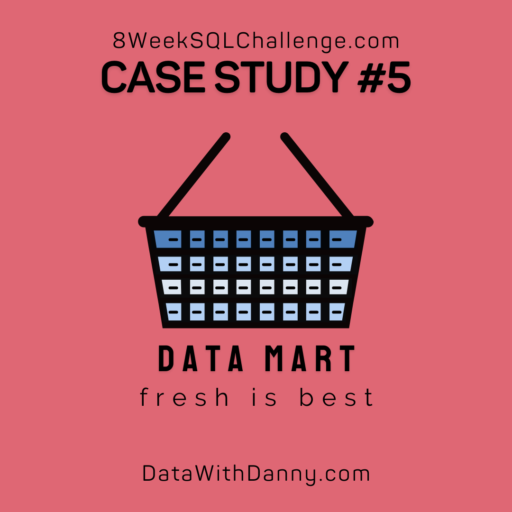

I performed web scraping using Python, with BeautifulSoup, Requests, and Pandas as the primary libraries, to scrape British Airways reviews from the Skytrax, which focuses on airline ratings.
The dataset was compiled and cleaned in Excel before being transferred to Power BI for exploratory data analysis and visualization.

_page-0001.jpg)
Conducted a predictive analysis using a bank's historical data to predict customers likely to churn.
The process involved performing Exploratory Data Analysis (EDA) and data preparation to identify patterns and factors contributing to customer churn.
Power BI and DAX expressions were utilized to prepare the data and carry out the analysis.

Performed data exploration in PostgreSQL to analyze the sales performance of an online supermarket specializing in fresh produce.
Used SQL to query the data and assess the impact of the supermarket's transition to sustainable packaging methods on sales performance.

Conducted descriptive analysis on a supply chain dataset to address key shipment and inventory management challenges.
Identified inefficiencies within the supply chain and developed an informative report to provide actionable insights from the data.
This project involved an in-depth analysis of sales differences between hybrid cars and other vehicle types over the past six months.
The analysis provided valuable insights and highlighted strategies to enhance the appeal of hybrid cars to customers.